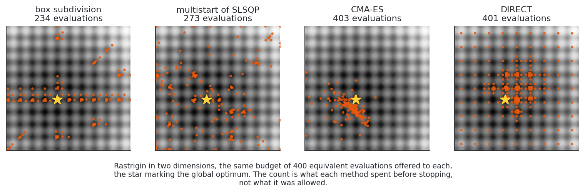
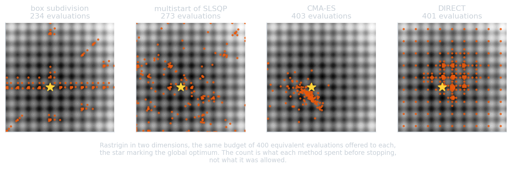

Annex B: the baselines#
Enumerating the boxes measures the exploration of the master, but it is not what
a practitioner would otherwise use. The comparison therefore also runs the three
methods that actually address a bound-constrained multimodal non-linear program,
chosen so that the three families of the class are represented: a restart of a
local solver, a stochastic search, and a deterministic partition. They
are run in benchmarks/baselines.py.


The four sampling patterns are the methods themselves: the box subdivision clusters its evaluations inside the boxes it decided to look into; multistart scatters local solves over the whole space; CMA-ES contracts an ellipsoid onto one basin; DIRECT lays a lattice refined where it looks promising.
Multistart of a local solver#
The idea. Draw \(N\) starting points over the design space, run a local solver from each, keep the best result. It is the reference of the class and the ancestor of the multi-level single-linkage family (Rinnooy Kan and Timmer, 1987), whose refinements decide which starting points are worth a local solve at all. With infinitely many starts it converges to the global optimum with probability one, which says nothing about any finite budget.
What it exploits. Nothing about the landscape: the starting points are independent, so the \(k\)-th local solve knows nothing of the \(k-1\) before it. That is the structural difference with the method benchmarked here, whose master decides the next box from the cuts of every box already solved.
How it is run. GEMSEO’s MultiStart, with \(50\) starting points from its
default design of experiments, and SLSQP (Kraft, 1988) as the local solver.
SLSQP builds a quadratic model of the Lagrangian and solves a quadratic program
at each iteration; it is the solver the box-subdivision sub-problems use by
default, and the one they were run with here, so the comparison isolates how
the starting regions are chosen rather than how they are exploited.
OptimizationLibraryFactory().execute(
problem,
algo_name="MultiStart",
n_start=50,
opt_algo_settings={}, # MultiStart apportions its own budget
doe_algo_settings={"seed": seed},
max_iter=10000, # the counter stops the run, not this
)
Warning
opt_algo_settings must not carry a max_iter: MultiStart apportions its own
budget across the starts, and a max_iter there makes it return inf after
zero evaluations, reporting success. The benchmark asserts that every method
evaluates something and returns a finite value.
CMA-ES#
The idea. The covariance matrix adaptation evolution strategy (Hansen and Ostermeier, 2001) samples a population from a multivariate normal \(\mathcal{N}(m, \sigma^2 C)\), ranks it, and moves the distribution towards the better half: the mean \(m\) becomes a weighted average of the selected points, the covariance \(C\) accumulates the directions that worked, and the step size \(\sigma\) follows the length of the path the mean has travelled. After a few generations the ellipsoid is aligned with the local valley structure, which is what the third panel of the figure shows.
What it exploits. Second-order structure, learnt from ranks alone: no gradient, and invariance to any increasing transformation of the objective. It is the strongest baseline here on a landscape whose ripple hides a single broad basin, Ackley in five dimensions, where it reaches the optimum every time and the box subdivision does not.
How it is run. The cma package, from the same starting point as the other
methods, with an initial standard deviation of a quarter of the range,
\(\sigma_0 = (u - l)/4\), the bounds passed as a box constraint, and the budget
enforced by its own maxfevals, which is exact.
DIRECT#
The idea. DIviding RECTangles (Jones, Perttunen and Stuckey, 1993) samples the centre of the design space, then repeatedly splits hyperrectangles. A rectangle \(j\) of centre value \(f_j\) and size \(d_j\) is potentially optimal if there is a Lipschitz constant \(\tilde K > 0\) for which
that is, if it lies on the lower-right convex hull of the cloud of points \((d_i, f_i)\). Every potentially optimal rectangle is split along its longest side, so the method balances a global search, the large rectangles, against a local one, the low-valued rectangles, without ever choosing a Lipschitz constant. It converges to the global optimum in the limit for a continuous objective, by density of the samples.
What it exploits. The geometry of the space rather than the shape of the objective, at the price of a partition that is regular and dimension-bound: the number of rectangles grows quickly with \(n\), which is why it is excellent in two dimensions and loses its edge in five.
How it is run. scipy.optimize.direct, which ignores the starting point,
being deterministic, with maxfun and maxiter set to the budget.
EGO, Bayesian optimization#
egobox (Lafage, 2022), the Rust implementation of efficient global
optimization (Jones, Schonlau and Welch, 1998). A Gaussian process is fitted to
everything evaluated so far, and the next point maximizes an expected improvement
over it: the surrogate carries the whole memory of the run, and the acquisition
decides between refining a known basin and probing an unexplored one.
This is the baseline of the regime the method targets. Where an evaluation costs minutes, the cost of fitting a surrogate is free by comparison and a few hundred evaluations is the whole budget, which is exactly the case the outer approximation is built for.
It is therefore the one baseline that a comparison at equal evaluations on analytic problems flatters least. Its own cost is not counted here, and on these problems that cost dominates: a run of five hundred evaluations takes some two and a half minutes against three seconds for the box subdivision, a hundred times more for the same budget. On an industrial objective that ratio inverts, and nothing in this benchmark measures the inversion.
Its budget is enforced natively and exactly, the number of calls being
n_doe + max_iters with a batch of one. It is capped that way rather than by the
counter because egobox is a Rust extension: an exception raised inside its
objective surfaces as an opaque panic instead of propagating, as it does for the
C extension of DIRECT. The initial design of experiments is five points per
variable, kept below half the budget so that the surrogate is used rather than
merely fitted.
It has a stopping criterion of its own, and it fires: on Styblinski-Tang the expected improvement collapses once the process models the landscape, and the run ends after twenty-nine evaluations of the five hundred it was allowed, a gap of \(0.286\) from the optimum. A cost below the budget means EGO finished, not that it was cut off.
The four compared#
multistart |
CMA-ES |
DIRECT |
EGO |
box subdivision |
|
|---|---|---|---|---|---|
gradient |
yes, in each local solve |
no |
no |
no |
yes, in each sub-problem |
stochastic |
the starting points |
yes |
no |
the initial design |
no |
exploits the past |
no |
the covariance |
the partition |
the surrogate, over every point |
the cuts of every solved box |
limit guarantee |
with infinitely many starts |
none |
dense sampling |
dense sampling |
out of reach, see annex C |
parallel |
the starts |
the population |
the potentially optimal rectangles |
a batch of the acquisition |
the boxes of an iteration |
own cost per iteration |
negligible |
negligible |
negligible |
cubic in the points so far |
one mixed-integer solve |
natural regime |
a few basins, cheap objective |
rippled landscapes, no gradient |
low dimension |
costly objective, small budget |
costly sub-problem with an adjoint |
EGO and the box subdivision are the two built for the same regime, which is what makes the comparison between them the informative one and the row on their own cost the caveat that goes with it.
Counting a budget across methods that differ that much#
A method using the gradient cannot be compared with one that does not on the number of objective evaluations alone: the gradient is information, and it is not free. The budget is therefore counted in equivalent evaluations, under the two conventions that bracket the truth:
convention |
a gradient costs |
the case it represents |
|---|---|---|
adjoint |
\(1\) evaluation |
an adjoint is available, which is what the method targets |
finite differences |
\(n\) evaluations |
the objective is a black box |
CMA-ES and DIRECT are unaffected by the convention, so reporting both brackets the comparison instead of picking the flattering one. The budget itself is \(500\) equivalent evaluations per design variable, since a fixed budget would favour the low-dimensional cases of whichever method converges fastest there.
How the budget is enforced. The objective and its gradient are wrapped in a counter that raises as soon as the budget is spent, and the run is stopped wherever it happens to be:
class BudgetedCounter(Counter):
def objective(self, x):
if self.cost(self.__dimension, self.__adjoint) >= self.__budget:
raise BudgetExceededError
return super().objective(x)
That works for the methods driven from Python, and not for the two called
from a C extension, where raising gives a SystemError instead of unwinding:
CMA-ES and DIRECT are therefore capped by their own maxfevals and maxfun.
Those caps are exact to within a rounding: DIRECT finishes the iteration it is
in, so it overshoots by about one percent, \(1011\) evaluations for a budget of
\(1000\), which the budget test tolerates.
What is deliberately absent#
Relaxation-based global solvers, BARON, SCIP, Couenne or Alpine, build convex relaxations from the algebraic form of the problem. The sub-problem of an industrial case does not have one: it is a disciplinary optimization or a multidisciplinary analysis. They are the right comparison for a polynomial program, and no comparison at all for this one.
Basin hopping, particle swarm and simulated annealing are variations on the two families already represented, a restarted local solver and a stochastic search, and would not separate the methods further.
References#
Rinnooy Kan, A. H. G., & Timmer, G. T. (1987). Stochastic global optimization methods. Part II: Multi level methods. Mathematical Programming, 39(1), 57-78.
Kraft, D. (1988). A software package for sequential quadratic programming. DFVLR-FB 88-28, DLR German Aerospace Center.
Hansen, N., & Ostermeier, A. (2001). Completely derandomized self-adaptation in evolution strategies. Evolutionary Computation, 9(2), 159-195.
Hansen, N. (2016). The CMA evolution strategy: a tutorial. arXiv:1604.00772.
Jones, D. R., Schonlau, M., & Welch, W. J. (1998). Efficient global optimization of expensive black-box functions. Journal of Global Optimization, 13(4), 455-492.
Lafage, R. (2022). egobox, a Rust toolbox for efficient global optimization. Journal of Open Source Software, 7(78), 4737.
Jones, D. R., Perttunen, C. D., & Stuckey, B. E. (1993). Lipschitzian optimization without the Lipschitz constant. Journal of Optimization Theory and Applications, 79(1), 157-181.
Jones, D. R., Schonlau, M., & Welch, W. J. (1998). Efficient global optimization of expensive black-box functions. Journal of Global Optimization, 13(4), 455-492.
Virtanen, P., et al. (2020). SciPy 1.0: fundamental algorithms for scientific computing in Python. Nature Methods, 17, 261-272.
Gallard, F., et al. (2018). GEMS: a Python library for automation of multidisciplinary design optimization process generation. AIAA/ASCE/AHS/ASC Structures, Structural Dynamics, and Materials Conference.